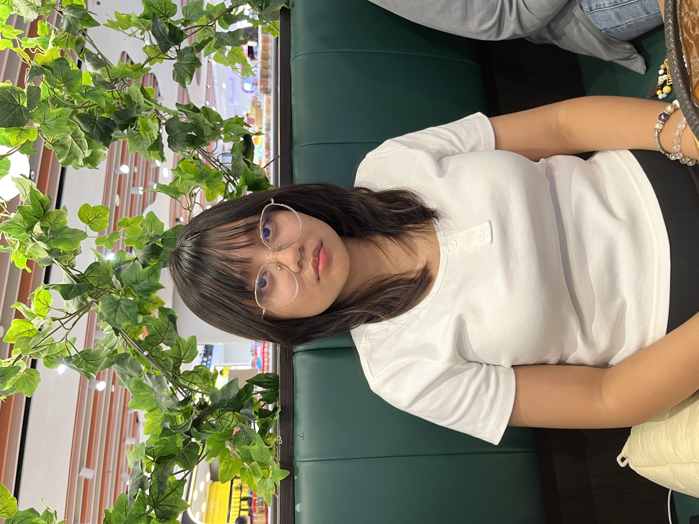

user@sync.ed:~$ open aboutus.txt
SYSTEM MESSAGE: Learn more about us down here.
,---,
,---, ,---.'|
.--.--. ,-+-. / | | | :
/ / ' .--, ,--.'|' | ,---. ,---. | | |
| : /`./ /_ ./| | | ,"' | / \ / \ ,--.__| |
| : ;_ , ' , ' : | | / | | / / ' / / | / ,' |
\ \ `./___/ \: | | | | | |. ' / . ' / |. ' / |
`----. \. \ ' | | | | |/ ' ; :__ ' ; /|' ; |: |
/ /`--' / \ ; : | | |--' ' | '.'| ___' | / || | '/ '
'--'. / \ \ ; | |/ | : :/ .\ : || : :|
`--'---' : \ \'---' \ \ / \ ; \ \ / \ \ /
\__'_; `----' `--" `----' `----'
user@sync.ed:~$ open aboutus.txt
SYSTEM MESSAGE: Learn more about us down here.
Chief Operations Officer: Victor |
Chief Excecutive Officer: Mikael |
Chief Finacial Officer: Ninia |
|---|---|---|
 |
 |
|
A close ally to this
|
Founder and product
|
A sister inpiring others
|
Senior Marketing Director: Jahnavi |
Chief Legal Officer: Tricia |
Senior Vice Software Engineering: Auni |
|
||
A person whose empathy
|
Tricia's strong willfulness,
|
Sunshine in our office,
|
Chief Hardware Officer: Ethan |
Chief knowledge officer: Ansel |
Huamn Resources: |
|
||
A close ally to this
|
Founder and product
|
A sister inpiring others
|